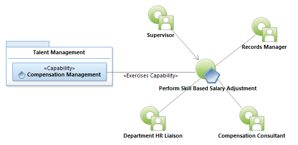
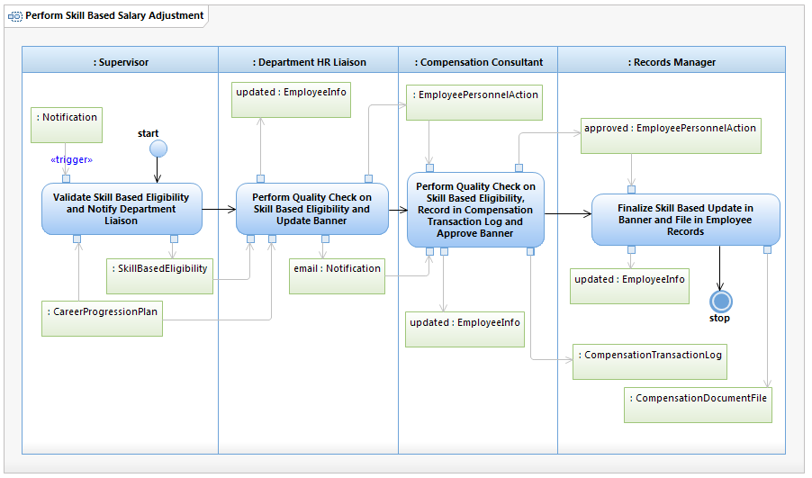

Use Case Model: Perform Skill Based Salary Adjustment
Architect: Aaron Brown, IT Enterprise Architect Senior
Date Last Modified: 11/20/2012
User Review: Holly Moyer, Compensation Manager
Date: mm/dd/yyyy
Based on predetermined career progression plan, an incremental salary adjustment can be authorized for an employee.
Follow link to Role Definitions

Use Case Model: Perform Skill Based Salary Adjustment

Activity Model: Perform Skill Based Salary Adjustment